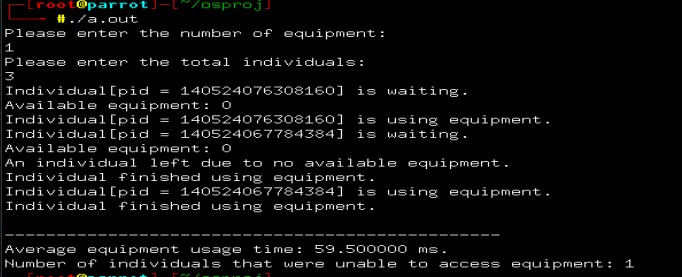

C Programs
GYM EQUIPMENT SOLUTION
#include <pthread.h>
#include <stdio.h>
#include <stdlib.h>
#include <unistd.h>
#include <semaphore.h>
#include <time.h>
#include <sys/types.h>
#include <sys/time.h>
void *gym_instructor_function(void *idp);
void *individual_function(void *idp);
void use_equipment();
void *make_individual_function();
pthread_mutex_t equipmentMutex;
sem_t gym_instructor_ready;
sem_t individual_ready;
sem_t modifyEquipment;
int equipment_count;
int total_individuals;
int available_equipment;
int no_access_individuals = 0;
time_t equipment_usage_sum;
void *gym_instructor_function(void *idp)
{
int counter = 0;
while (1)
{
sem_wait(&individual_ready);
sem_wait(&modifyEquipment);
available_equipment++;
sem_post(&modifyEquipment);
sem_post(&gym_instructor_ready);
pthread_mutex_lock(&equipmentMutex);
use_equipment();
pthread_mutex_unlock(&equipmentMutex);
printf("Individual finished using equipment.\n");
counter++;
if (counter == (total_individuals - no_access_individuals))
break;
}
pthread_exit(NULL);
}
void *individual_function(void *idp)
{
struct timeval start, stop;
sem_wait(&modifyEquipment);
if (available_equipment >= 1)
{
available_equipment--;
printf("Individual[pid = %lu] is waiting.\n", pthread_self());
printf("Available equipment: %d\n", available_equipment);
gettimeofday(&start, NULL);
sem_post(&individual_ready);
sem_post(&modifyEquipment);
sem_wait(&gym_instructor_ready);
gettimeofday(&stop, NULL);
double sec = (double)(stop.tv_usec - start.tv_usec) / 1000000 + (double)(stop.tv_sec - start.tv_sec);
equipment_usage_sum += 1000 * sec;
printf("Individual[pid = %lu] is using equipment. \n", pthread_self());
}
else
{
sem_post(&modifyEquipment);
no_access_individuals++;
printf("An individual left due to no available equipment.\n");
}
pthread_exit(NULL);
}
void use_equipment() {
int s = rand() % 401;
s = s * 1000;
usleep(s);
}
void *make_individual_function() {
int tmp;
int counter = 0;
while (counter < total_individuals)
{
pthread_t individual_thread;
tmp = pthread_create(&individual_thread, NULL, (void *)individual_function, NULL);
if (tmp)
printf("Failed to create thread.");
counter++;
usleep(100000);
}
}
int main() {
srand(time(NULL));
pthread_t gym_instructor;
pthread_t individual_maker;
int tmp;
pthread_mutex_init(&equipmentMutex, NULL);
sem_init(&individual_ready, 0, 0);
sem_init(&gym_instructor_ready, 0, 0);
sem_init(&modifyEquipment, 0, 1);
printf("Please enter the number of equipment: \n");
scanf("%d", &equipment_count);
printf("Please enter the total individuals: \n");
scanf("%d", &total_individuals);
available_equipment = equipment_count;
tmp = pthread_create(&gym_instructor, NULL, (void *)gym_instructor_function, NULL);
if (tmp)
printf("Failed to create thread.");
tmp = pthread_create(&individual_maker, NULL, (void *)make_individual_function, NULL);
if (tmp)
printf("Failed to create thread.");
pthread_join(gym_instructor, NULL);
pthread_join(individual_maker, NULL);
printf("\n------------------------------------------------\n");
printf("Average equipment usage time: %f ms.\n", (equipment_usage_sum / (double) (total_individuals - no_access_individuals)));
printf("Number of individuals that were unable to access equipment: %d\n", no_access_individuals);
}
